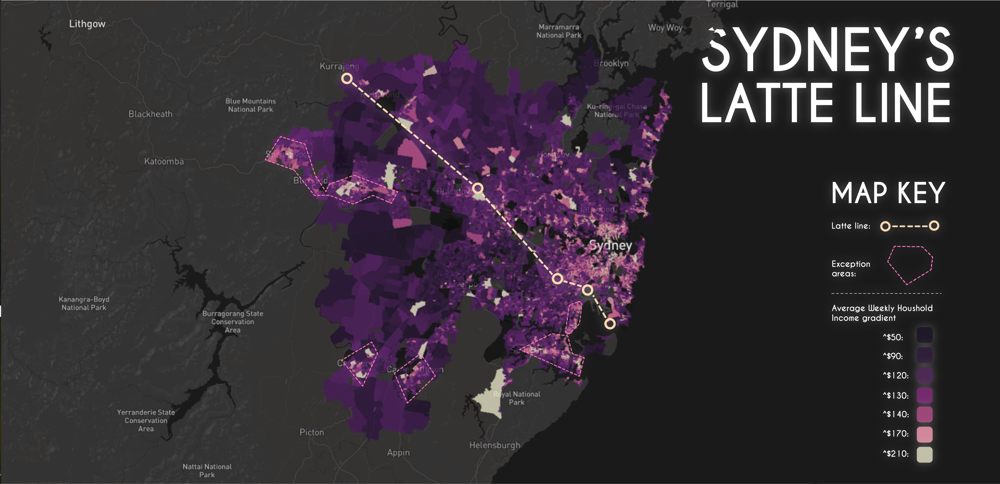

Sydney is currently the most culturally diverse city in Australia and one of the most diverse in the world, with large amounts of the population having direct and generational roots to central Asia, The Middle East, Eastern Europe and Western Europe, but also manages to maintain its large Anglo-Saxon heritage.

Despite Sydney’s vast cultural diversity, each sub cultural population tends to segregate itself in a certain district of Sydney’s geography (click on the image above to see a full technical analysis of Sydney’s ethnicity). This is not necessarily a flaw in the attempt to maintain each individual’s cultural heritage but is an inefficient way of sharing and integration of the various cultures in Sydney. Furthermore, Sydney’s latte line has a high correlation with Sydney’s ethnicity as certain ethnic populations tend to either be above or bellow it, which is negative for Sydney’s equality.

As the segregation of ethnicity has a positive influence on the preservation of cultural heritage but has a negative impact on the integration of culture and so economic equality, Sydney needs to adopt a method of connecting its segregated districts together without disrupting their concentration of ethnicity. The diagram above demonstrates a multifaceted network that could possibly connect certain areas together without diluting them.

In the centre of districts with high amounts of cultural concentration, a semi napkin ring shaped building will be placed serving as a cultural nucleus. These building will then be connected to super- fast maglev trains that connect the nucli together in a forward fashion and create a network of cultural centres. In this way, culturally concentrated areas will remain segregated, but will become easily accessible, allowing cultural integration. As highlighted In the diagram above the nuclei will have an open public centre, and are wrapped around with buildings congaing commercial, residential and recreational areas, all connected by a two way transportation system.
.
The example above visualises where the nuclei would could be located. These areas like, Hurstville, Bankstown, Liverpool, North Sydney, black town, Strathfield… have the high concentrations of a specific ethnicity thus could be the holders of a cultural nuclei. //change